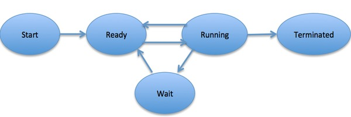

| Table of contents: |
|---|
| OS-Home |
| OS-Overview |
| OS-Process |
| OS-Properties |
| OS-Multithreading |
A process is basically a program in execution. The execution of a process must progress in a sequential fashion.
A process is defined as an entity which represents the basic unit of work to be implemented in the system.
To put it in simple terms, we write our computer programs in a text file and when we execute this program, it becomes a process which performs all the tasks mentioned in the program.
When a program is loaded into the memory and it becomes a process, it can be divided into four sections ─ stack, heap, text and data. The following image shows a simplified layout of a process inside main memory −

| S.N. | Component & Description |
|---|---|
| 1 |
Stack
The process Stack contains the temporary data such as method/function parameters, return address and local variables. |
| 2 |
Heap This is dynamically allocated memory to a process during its run time. |
| 3 |
Text This includes the current activity represented by the value of Program Counter and the contents of the processor's registers. |
| 4 |
Data This section contains the global and static variables. |
When a process executes, it passes through different states. These stages may differ in different operating systems, and the names of these states are also not standardized.
In general, a process can have one of the following five states at a time.
| S.N. | State & Description |
|---|---|
| 1 |
Start This is the initial state when a process is first started/created. |
| 2 |
Ready The process is waiting to be assigned to a processor. Ready processes are waiting to have the processor allocated to them by the operating system so that they can run. Process may come into this state after Start state or while running it by but interrupted by the scheduler to assign CPU to some other process. |
| 3 |
Running Once the process has been assigned to a processor by the OS scheduler, the process state is set to running and the processor executes its instructions. |
| 4 |
Waiting Process moves into the waiting state if it needs to wait for a resource, such as waiting for user input, or waiting for a file to become available. |
| 5 |
Terminated or Exit Once the process finishes its execution, or it is terminated by the operating system, it is moved to the terminated state where it waits to be removed from main memory. |